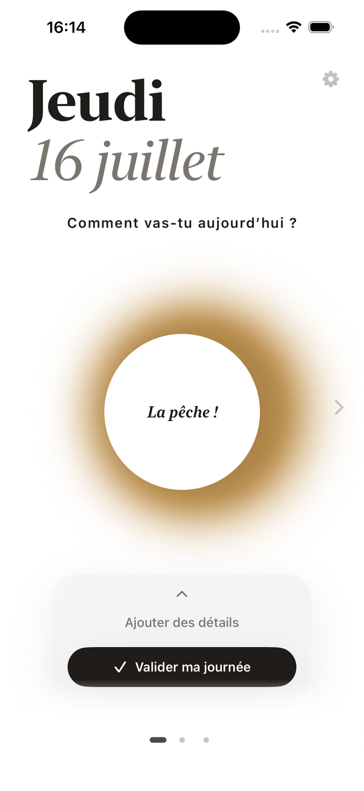
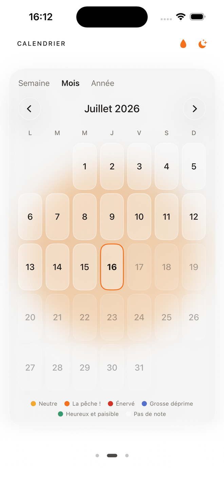

IPHONE + APPLE WATCH · IOS 17+ · BIENTÔT
Fais glisser le disque, choisis parmi 5 humeurs — et ton calendrier d'émotions se colore tout seul. Depuis ton iPhone comme depuis ta montre.
iPhone + Apple Watch · Gratuit · Sans compte · Sans tracking
CE QUE FAIT IFEEL
Un geste par jour suffit. L'app s'occupe du reste.
Fini le simple smiley : fais glisser le disque sur le pad à deux axes et choisis exactement où tu te situes, parmi cinq humeurs.
Note ton humeur depuis l'Apple Watch, avec le même pad qu'au poignet. Ça se synchronise tout seul avec l'iPhone.
Nouveau look en tuiles colorées. Semaine, mois, année : vois tes humeurs se teinter dans le temps et repère tes cycles.
Chaque journée reste modifiable. Rouvre un jour passé, change l'humeur, ajoute une raison ou un mot.
Le pourquoi de ton humeur, plus la météo, la lune et les règles mises en regard — pour révéler les liens invisibles.
Tout reste sur ton iPhone. Aucun compte, aucun serveur, aucun tracking. Verrouillage Face ID, six langues, clair et sombre.
L'APP
Deux écrans. C'est toute l'app.
Le grand disque répond à ton geste : glisse-le vers ton humeur du jour parmi cinq. Valide, et ta journée prend sa couleur dans le calendrier — semaine, mois, année. Rien de superflu.


EN TROIS TEMPS
Aucune configuration. L'app t'attend là où il faut.
Le grand disque t'attend au centre. Fais-le glisser vers ton humeur du jour, parmi cinq — depuis l'iPhone ou l'Apple Watch.
Ajoute une raison, un mot, la météo. Et si demain tu changes d'avis : chaque journée reste modifiable.
Ton calendrier se colore, les cycles apparaissent. Tu te découvres.
À METTRE EN REGARD
Active ce qui te parle : IFEEL l'affiche à côté de ton humeur.
IFEEL arrive sur iPhone. Laisse-moi ton mail et je te préviens dès la sortie.
Gratuit · iPhone (iOS 17+) · Aucune donnée ne quitte ton téléphone, sauf la localisation envoyée à Open-Meteo pour la météo.